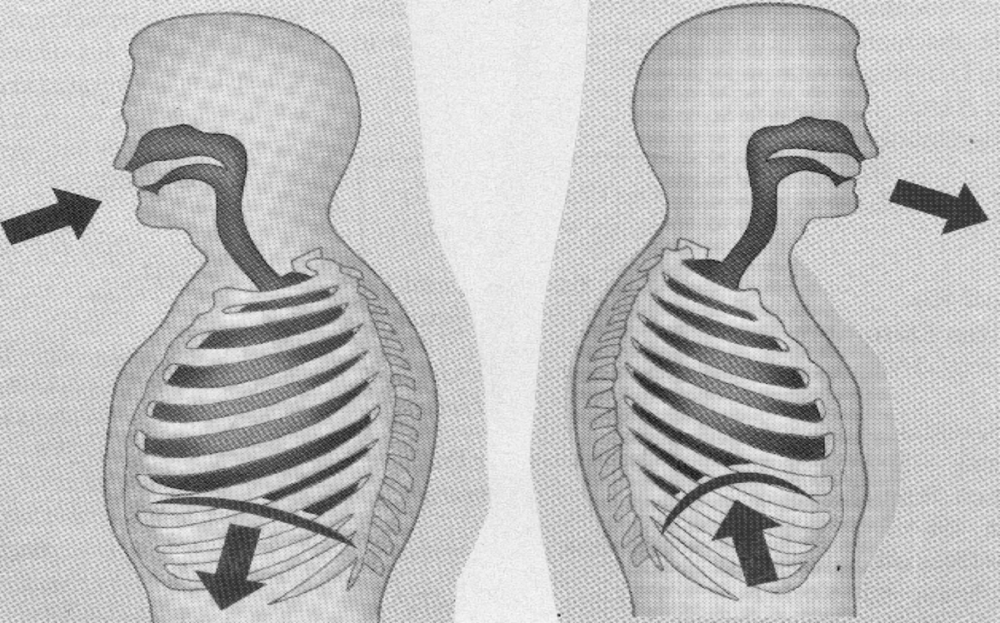

Atmung
Wer stark, gesund und jung bleiben will, sei mäßig, übe den Körper und atme reine Luft. (Hippokrates)
Alle Heilung geht durch den Atem. (Paracelsus)
ALLGEMEIN: Ohne Atmung ist kein Leben möglich. Jede Körperzelle benötigt Sauerstoff. Wir können: 30 Tage lang ohne Nahrung, 3 Tage ohne Flüssigkeit, aber nur 3 Minuten ohne Sauerstoff auskommen. Atmen kann uns Kraft, Ruhe und Gesundheit schenken.
Was Atmen bedeutet:
Atmen – es ist das Erste was wir tun, wenn wir das Licht der Welt erblicken, um im weiteren Verlauf des Lebens etwa 1 Milliarde mal Luft zu holen. Atmen ist eine Art Ernährung, denn sie versorgt unseren Körper mit lebenswichtigem Sauerstoff. Atmung dient aber auch der Ausscheidung, denn in Form von Kohlendioxid befreien wir uns von Giftstoffen und Abfallprodukten. Solange wir atmen, leben wir. In der Hektik des Alltags atmen wir häufig zu flach und zu schnell. Langsames Atmen verlängert das Leben. In alten Yoga - Schriften wird behauptet, dass für jeden Menschen die Anzahl der Atemzüge feststeht. Man mag dies als mystische Legende abtun, interessant ist aber, dass ein langsamer Atem, vor allem bei Herzkrankheiten, tatsächlich mit einer längeren Lebensdauer verbunden ist. Die Gründe: Schlechte Haltung, sitzende Berufe, beengte Kleidung, Angst, Stress und Hektik bewirken, dass die eingeatmete Luft nicht bis in den Bauchraum, sondern gerade mal bis zum Brustkorb gelangt. Die Folge: Ein Teil der Kohlendioxids bleibt im Körper, so dass wir schnell ermüden und die Konzentration und Aufmerksamkeit schnell abnimmt, insbesondere bei Schulkindern. Lunge und Gehirn stehen in Wechselbeziehung zueinander. Im Büro werden durch die schlechte Ausatmung die Leistungen rasch vermindert und oft sehen diese Menschen blass aus. Falsche Atmung hält Schlackenstoffe im Körper zurück. Es kommt zu einer schleichenden Vergiftung, der am Ende ganze Muskeln und Organe zum Opfer fallen. Die Folgen sind chronische Krankheiten, Durchblutungsstörungen, Krämpfe, vorzeitiges Altern, Alzheimer. Atmen alkalisiert unser Blut.
| Venöses Blut hat einen pH-Wert von | 7.31 |
| Arterielles Blut hat einen pH-Wert von | 7.41 |
Bei jedem Ein- und Ausatmen steigt der Blut pH-Wert von 7,31 auf 7,41. Atmen ist extrem wichtig!
- Gesundes Atmen -
Wir falsch atmet, setzt seinen Körper ständig unter Stress, gefährdet damit Blutdruck und Herz. Dabei kann langsames, bewusstes Atmen, 2 x pro Tag für mehrere Minuten praktiziert, beinahe so gut wirken wie Medikamente. Mit der Atemübung „4711“ kann man übrigens gut entspannen und besser einschlafen, denn der Blutdruck sinkt etwas, die Herzleistung verbessert sich. Und so einfach geht es: Setzen oder legen Sie sich hin, atmen Sie 4 Sekunden ein und 7 Sekunden aus, diesen Rhythmus 11 Minuten lang durchhalten.

Wir müssen tiefer atmen, wenn wir unsere körperliche und geistige Gesundheit wiederherstellen, erhalten oder verbessern möchten. Da man Atem aber nicht verkaufen kann, wird sich auch keine einflussreiche Lobby diesem wichtigen Thema annehmen. Doch gesundes Atmen lässt sich leicht wieder erlernen: Auf den Rücken legen. Die Hände locker auf den Bauch, wobei sich die Fingerspitzen berühren. Tief einatmen - der Bauch sollte sich dabei hervorwölben wie ein Luftballon, der aufgeblasen wird - die Fingerspitzen entfernen sich dabei voneinander und bis 5 zählen. 5 Sekunden Pause machen (Luft anhalten), dann beim Ausatmen bis 15 zählen, so als wolle man eine Feder wegblasen. Beim Ausatmen sinkt der Bauch ein, so wie bei einem Luftballon die Luft entweicht. Die Bauchatmung hat viele positive Einflüsse auf den Körper. Da sich beim Einatmen die Zwerchfellmuskulatur zusammenzieht und gegen den Darm drückt, wird auch die Verdauung angeregt. Beobachten Sie mal ein Baby, da geht der Bauch rauf und runter, wie bei einem Blasebalg. Wenn ich meinen Atem einfach nur beobachte, dann verändert er sich schon. Ausatmen ist genau so wichtig wie Einatmen. Atmen Sie immer 2 x so lange aus, wie ein. Das ist alles, ganz einfach und ohne Praxisgebühr. Die Sache hat leider nur einen kleinen Haken: Man muss es auch tun. Je mehr Kohlendioxid Sie ausatmen, umso mehr Sauerstoff können Sie einatmen.
In eine volle Tasse kannst Du keinen Tee gießen. (Chinesische Weisheit)
Entschleunigtes Atmen: Atmen Sie bewußt langsam 4 Sekunden lang durch die Nase ein und 6-7 Sekunden durch den leicht geöffneten Mund aus. Wiederholen Sie die langsamen Atemzüge für die Dauer von 3-5 Minuten, wenn möglich 2x am Tag. Das aktiviert den Parasympathikus, unseren „Ruhenerv.“ Wechselatmung: Atmen Sie ein. Schließen Sie dann das rechte Nasenloch mit dem rechten Daumen. Atmen Sie durch das linke Nasenloch aus und verschließen es nun mit mit rechten Ringfinger. Dann über das rechte Nasenloch aus- und einatmen und wieder einige Minuten von vorn beginnen. Die Wechselatmung hat einen ausgleichenden Effekt. BUTEYKO-Methode: Sie basiert auf folgender Beobachtung: Der ukrainische Arzt - Prof. Dr. Buteyko stellte bei seinen Forschungsarbeiten zur Atmung Sterbender fest, dass sie umso intensiver atmeten, je näher sie dem Tod waren. Das brachte ihn auf die Idee, dass umgekehrt ein geringerer Luftumsatz mit mehr Gesundheit verbunden sein könnte. Die Buteyko-Therapie ist eine sehr einfache Methode. Die Übungen zielen darauf ab, dass weniger Sauerstoff eingeatmet und auch weniger Kohlendioxid abgeatmet wird. Das läßt sich relativ einfach durch längere Atempausen erreichen. Eine besonders hilfreiche Übung ist die 3-teilige Atmung: Einatmen - Ausatmen - Atemruhe. Gut ist eine Atempause zwischen 20 und 30 Sekunden. Kohlendioxid (CO₂) ist zwar ein Abfallprodukt der Atmung, und dennoch für viele biosynthetische Vorgänge im Körper notwendig. Daher muss es in einem bestimmten Verhältnis zum Sauerstoff im Körper vorhanden sein. Sind zuviel Sauerstoff und zuwenig Kohlendioxid vorhanden, spricht man von einem Zustand der Hyperventilation. Anmerkung: Durch das Ein-und Ausatmen in eine Papiertüte kann der CO₂-Pegel wieder angehoben werden, indem man verbrauchte Luft wieder einatmet. Kommt es zu einem Kohlendioxid-Mangel, können sich glatte Muskeln, Bronchien und Blutgefäße verkrampfen. Kalte Hände und Füße, aber auch Kopfschmerzen, Nervosität und Schwindel können die Folge sein. Weitere Symptome einer beschleunigten Atmung sind häufig Engegefühl im Brustkorb, Müdigkeit, Konzentrationsstörungen, Reizbarkeit, Ängstlichkeit, Depressionen sowie Muskelkrämpfe und chronische Schmerzen.
Wissenswert
Von den anfallenden Giftstoffen und Schlacken werden lediglich 10 % über die Verdauung und den Harn, 20 % über die Haut, aber 70 % durch den Atem ausgeschieden. Übrigens: Beim Einatmen hat man weniger Schmerzen (Spritze).
Anmerkung: Ohne richtige Atmung ist auch jede psychosomatische Behandlung sinnlos. Tiefes bewusstes Atmen ist der schnellste Weg zur Entspannung. Es lässt uns ruhig werden und wir können wieder klar denken. Wie sagte es so schön unsere Großmutter, bei Ärger und Aufregung: Hol erst einmal tief Luft und zähl bis zehn.